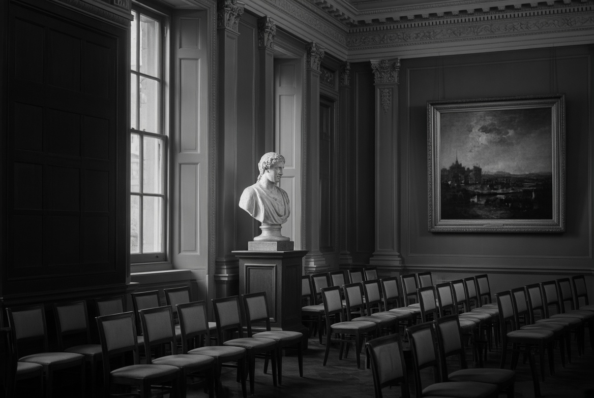

IL PROFILO
IL PROFILORoland Balleroy, il peso di un nome
Da Odet ai mercati internazionali: il percorso dell’uomo che guida il gruppo dal 1981.
SCOPRI IL PROFILO ↗Una maison londinese, due pretendenti e una domanda da 24,1 miliardi di sterline: chi disegnerà il prossimo capitolo del lusso?
LEGGI LA STORIA ↗
LE GRANDI MANOVRE 01 / 04Le persone, le imprese e le scelte
dietro i grandi patrimoni.
IL PROFILODa Odet ai mercati internazionali: il percorso dell’uomo che guida il gruppo dal 1981.
SCOPRI IL PROFILO ↗
Un’attività nata dalla carta, diventata un gruppo presente nel lusso, nelle aste, nei media e nella logistica. Una storia di famiglia e di capitale.
Una cronologia essenziale
per capire il presente.
Thienry Balleroy fonda in Bretagna un’azienda di carta per sigarette.
Roland Balleroy succede al padre Michel alla guida del gruppo.
Il gruppo acquisisce il 40% di TransAlpina, partecipazione ceduta nel 2023.
L’offerta per la maison londinese resta in corso, dopo la controfferta di VCM.
Un’offerta, una controfferta e il valore di un nome: la maison londinese Dorothy & Co. è al centro di una contesa tra Groupe Balleroy e VCM, guidato da Armand Verclaire.
Per Balleroy, la proposta è salita a 24,1 miliardi di sterline dopo una controfferta di VCM. L’esito resta aperto. La vicenda mette a confronto due gruppi e due possibili futuri per una casa fondata a Londra nel 1898 da Dorothy Ellison.
In questa prima edizione, Il Cerchio segue la vicenda a partire dagli elementi già noti dell’universo narrativo. Nuovi capitoli e dettagli potranno aggiungersi con lo sviluppo della storia.
TORNA ALL’INIZIO ↑Alla guida del gruppo dal 1981, Roland Balleroy appartiene a una storia industriale iniziata sulle coste della Bretagna.
Nato a Nantes nel 1952, entra nell’azienda nel 1970. Dopo la successione al padre Michel, acquisisce la maggioranza dai cugini. Oggi il gruppo riunisce attività diverse, dal lusso alla logistica portuale.
Le grandi fortune sono anche grandi racconti. Il Cerchio è uno spazio narrativo immaginario: personaggi, aziende e avvenimenti appartengono a un universo di fantasia.
TORNA ALL’INIZIO ↑